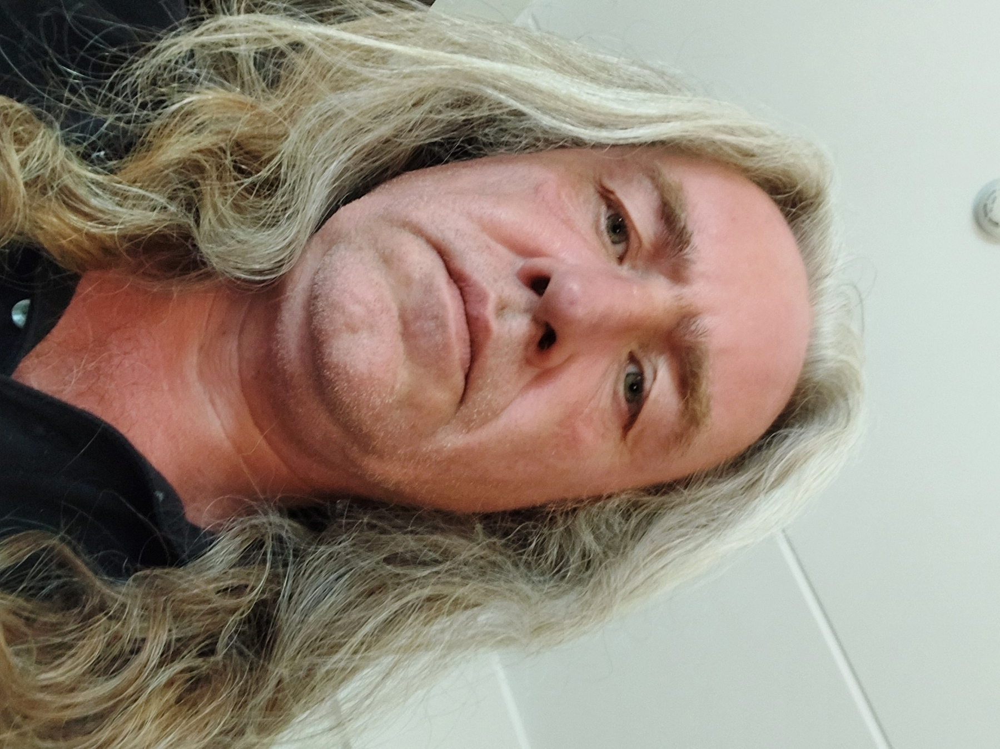

01 / DIGI
Veebiarendus
Kaasaegsed ja kasutajasõbralikud veebilahendused sinu ideele või ettevõttele.
- Ettevõtte kodulehed ja portfooliod
- E-poed
- Node.js lahendused ja API arendus
- Veebilehtede hooldus ja edasiarendus
Technology • Creativity • Innovation
Veebiarendus • Arvutite remont • Autor • Muusikaprodutsent
Aitan luua veebilehti, e-poode ja tarkvaralahendusi ning pakun arvutite hooldust ja remonti. Lisaks olen romaani Sea of Freedom autor ja ansambli Power Transfer produtsent.

Arendaja, tehnikahuviline ja looja · Paide
Kes ma olen
Olen tehnilise taustaga arendaja ja elektroonikahuviline. Tegelen veebirakenduste, e-poodide ja digitaalsete lahenduste loomisega ning pakun arvutite remonti ja tehnilist nõustamist. Loomingulise poole pealt olen romaani Sea of Freedom autor ja ansambli Power Transfer produtsent.
Teenused
01 / DIGI
Kaasaegsed ja kasutajasõbralikud veebilahendused sinu ideele või ettevõttele.
02 / TEHNIKA
Diagnostika, hooldus ja remont kodukasutajatele ning väikeettevõtetele.
03 / NÕU
Aitan valida sobiva tehnilise suuna ja planeerida järgmisi samme.
Projektid
Minu isiklik portfoolio, teenused ja arendusprojektid ühes kohas.
Vaata kodulehteKunsti ja loomingut tutvustav veebileht visuaalseks ning professionaalseks esitluseks.
maireart.euIsiklik ja bränditud veebileht, mis koondab tutvustuse ning kontaktinfo.
mairerasta.euTeaduslikel ja harivatel teemadel põhinev selge struktuuriga veebileht.
moleculemaster.euEttevõtte koduleht, e-pood või Node.js-i, JavaScripti ja andmebaasiga lahendus, mis on tehtud sinu vajaduste järgi.
Räägime sinu ideestRaamat
Olen Amazonis avaldatud romaani Sea of Freedom autor. Kirjutamine on üks viis, kuidas avastada uusi maailmu ja jagada lugusid lugejatega.
Otsi raamatut AmazonistMuusika
Power Transfer on minu muusikaprojekt, kus ühendan roki, elektroonika ja kaasaegse produktsiooni. Olen projekti produtsent ja looja.
Minu laulud on YouTube'is üleval Priit Linnakivi kanalis.
Leia kanal YouTube'isMiks valida mind